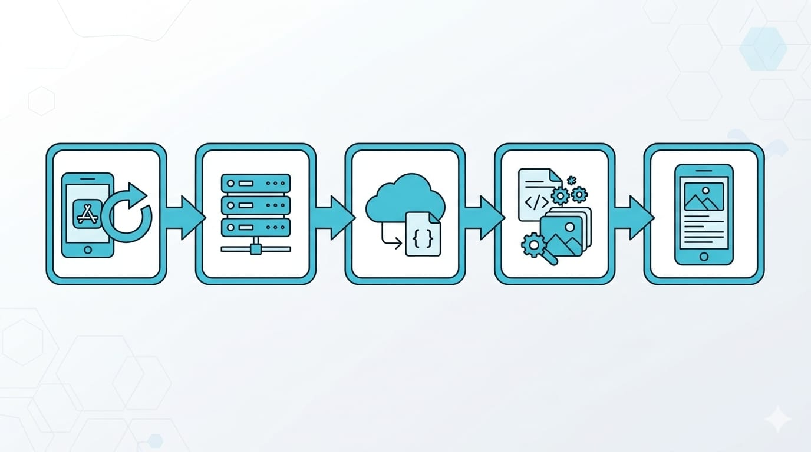

到目前為止，我們的 App 能顯示畫面、能互動了，但有兩個致命問題：一關掉資料就不見，而且不會跟外界溝通。這篇就來補這兩塊，讓 App 從「玩具」變成「實用工具」。
會分兩部分：先學怎麼在本機記住資料，再學怎麼從網路抓資料。
第一部分：讓 App 記住資料
UserDefaults：存小東西最簡單
App 常常需要記住一些小設定，例如「使用者的暱稱」「深色模式開了沒」「上次看到第幾頁」。這種小資料，用 UserDefaults 最簡單：
// 存資料
UserDefaults.standard.set("智慧喵", forKey: "userName")
UserDefaults.standard.set(true, forKey: "isDarkMode")
// 讀資料
let name = UserDefaults.standard.string(forKey: "userName") // "智慧喵"
let isDark = UserDefaults.standard.bool(forKey: "isDarkMode") // true概念很像「用一把鑰匙（key）存一個值」，下次用同一把鑰匙就能拿回來。而且它會自動保存，App 關掉再開，資料還在。
適用範圍要注意：UserDefaults 只適合存少量、簡單的資料（設定、開關、小字串）。它不是資料庫，別拿來存大量清單或複雜資料——那是後面 CoreData / SwiftData 的工作（這系列先不深入，先把觀念建立起來）。
資料存在哪？安全嗎？ 這是新手常有的疑問，講清楚：
- 存在使用者自己的裝置本機（不是雲端、不是你的伺服器），而且只有你這個 App 讀得到，別的 App 看不到。
- App 關掉、手機重開資料都還在；只有把 App 整個刪掉才會連資料一起清除。
- 因為存在本機，所以換手機、重灌不會自動帶過去（除非你另外做 iCloud 同步）。
- ⚠️ 重點：UserDefaults 沒有加密。所以別拿它存機密資料（密碼、金鑰、Token）——那類東西要用 Keychain（鑰匙圈），它才有加密保護。UserDefaults 存「暱稱、深色模式開關」這種不敏感的設定就好。
（@AppStorage 底層就是 UserDefaults，所以上面這些特性完全一樣。）
在 SwiftUI 裡更順手：@AppStorage
SwiftUI 有個貼心的寫法 @AppStorage，直接把 UserDefaults 綁到畫面上：
struct SettingsView: View {
@AppStorage("userName") var userName = "訪客"
var body: some View {
VStack {
Text("你好，\(userName)")
TextField("輸入暱稱", text: $userName)
}
}
}使用者在輸入框改了名字，userName 會自動存進 UserDefaults、畫面也自動更新，App 重開名字還在。一行搞定存取，很好用。
第二部分：從網路抓資料
大部分實用的 App 都要連網——查天氣、看新聞、抓匯率。這一段是關鍵。
先懂三個名詞
- API：可以想成「網路上的一個資料窗口」。你按照它的規則發出請求，它回你資料。例如天氣 API，你問它某城市天氣，它回你溫度、濕度。
- JSON：API 回傳資料最常用的格式，長得像一堆「鍵：值」的組合，例如
{"city": "台北", "temp": 28}。 - URLSession：Swift 內建、用來發網路請求的工具。

整個流程是：App 發出請求 → 伺服器回傳 JSON → 我們把 JSON 轉成 Swift 資料 → 顯示在畫面上。
Codable：把 JSON 變成 Swift 資料
Swift 有個很優雅的機制 Codable，能自動把 JSON 對應到你定義的資料結構。你只要照 JSON 的欄位定義一個 struct：
// 假設 API 回傳：{"city": "台北", "temp": 28}
struct Weather: Codable {
let city: String
let temp: Int
}欄位名稱對得上，Swift 就能自動轉換，不用自己一個個手動解析。
URLSession：實際抓資料
先單獨看「抓資料」這段邏輯怎麼寫（這是零件教學，等一下會把它放進 View 裡，你先看懂結構就好）。用現代 Swift 的 async/await 寫法（比舊的 callback 好讀很多）：
func fetchWeather() async {
// 1. 準備網址
guard let url = URL(string: "https://example.com/api/weather") else { return }
do {
// 2. 發出請求，等待回應
let (data, _) = try await URLSession.shared.data(from: url)
// 3. 把回傳的 JSON 解析成 Weather
let weather = try JSONDecoder().decode(Weather.self, from: data)
// 4. 拿到資料了
print("\(weather.city) 溫度 \(weather.temp) 度")
} catch {
// 出錯就處理（網路斷了、格式不對等）
print("抓取失敗：\(error)")
}
}幾個重點：
async/await：網路請求需要時間，await表示「在這裡等它回來，但不卡住整個 App」。do / catch：網路很容易出錯（斷線、逾時、格式不符），一定要處理錯誤，不能假設它一定成功。guard let：先確認網址有效，無效就提早結束（這也用到了上一篇學過的可選型別觀念）。
在 SwiftUI 畫面裡呼叫（完整範例）
那個抓資料的函式要放進 View（struct ... : View）裡面當一個方法——不是丟在外面。把它、@State、.task 串起來，就是一個完整、可以直接跑的畫面。下面這段可以整段用（記得前面 Weather 那個 struct 也要有）：
struct WeatherView: View {
// 狀態：抓到的資料放這，一變畫面就自動更新
@State private var cityName = "載入中…"
var body: some View {
Text(cityName)
.task {
// 畫面一出現就自動抓資料
await loadWeather()
}
}
// 抓資料的方法，放在 View 裡面
func loadWeather() async {
guard let url = URL(string: "https://example.com/api/weather") else { return }
do {
let (data, _) = try await URLSession.shared.data(from: url)
let weather = try JSONDecoder().decode(Weather.self, from: data)
cityName = weather.city // 改 @State → 畫面自動更新
} catch {
cityName = "抓取失敗"
}
}
}看出來了嗎？前面那個獨立的 fetchWeather() 其實就是這裡的 loadWeather()——同一段邏輯，只是這次放進 View 裡、成功後把結果存進 @State（所以畫面會自動更新，這就是上一篇學的狀態驅動）。
所以回答「函式放哪」：抓資料的 func 放在 View 的 struct 裡面（跟 body 平行），在 .task 裡呼叫它。.task { } 是 SwiftUI 的好用修飾符——畫面一出現就執行裡面的非同步工作，很適合拿來載入資料。
完整可貼版本（避免「找不到 Weather」）
上面為了講解拆成好幾段，如果你只貼 WeatherView 會出現 cannot find 'Weather' in scope（找不到 Weather）——因為 Weather 是前面分開定義的，你漏貼了。把兩段一起貼就沒事。這是完整版，可以整段複製：
import SwiftUI
// ① 對應 API 回傳的資料結構
struct Weather: Codable {
let city: String
let temp: Int
}
// ② 畫面 + 抓資料
struct WeatherView: View {
@State private var cityName = "載入中…"
var body: some View {
Text(cityName)
.task { await loadWeather() }
}
func loadWeather() async {
guard let url = URL(string: "https://example.com/api/weather") else { return }
do {
let (data, _) = try await URLSession.shared.data(from: url)
let weather = try JSONDecoder().decode(Weather.self, from: data)
cityName = weather.city
} catch {
cityName = "抓取失敗"
}
}
}提醒：這裡的網址 https://example.com/api/weather 是假的，所以就算編譯通過、實際跑也抓不到真資料，畫面會顯示「抓取失敗」——這是正常的。這段是教你「怎麼把抓資料組進 View」的結構。下面就換成一個真的抓得到的 API。
換成真的抓得到：實戰練習
要抓真資料，需要一個真實、免費、不用金鑰的公開 API。這裡用大家最常拿來練手的 JSONPlaceholder（穩定、免費、免註冊）。
第一步：先知道資料長怎樣。 這也回答一個常見問題——「我怎麼知道有哪些欄位可以抓？」最簡單的方法：把 API 網址直接貼到瀏覽器打開，看它回傳什麼。打開 https://jsonplaceholder.typicode.com/todos/1，你會看到：
{
"userId": 1,
"id": 1,
"title": "delectus aut autem",
"completed": false
}一目了然——有 userId、id、title、completed 四個欄位，型別分別是數字、數字、文字、true/false。你的 struct 就照這個抄：欄位名稱和型別對上，Codable 就能自動轉換。
第二步：照著寫，就抓得到了。 完整可跑版本（整段複製）：
import SwiftUI
// 照 API 回傳的欄位定義（打開網址就看得到）
struct Todo: Codable {
let userId: Int
let id: Int
let title: String
let completed: Bool
}
struct TodoView: View {
@State private var text = "載入中…"
var body: some View {
Text(text)
.padding()
.task { await loadTodo() }
}
func loadTodo() async {
guard let url = URL(string: "https://jsonplaceholder.typicode.com/todos/1") else { return }
do {
let (data, _) = try await URLSession.shared.data(from: url)
let todo = try JSONDecoder().decode(Todo.self, from: data)
text = "第 \(todo.id) 筆：\(todo.title)"
} catch {
text = "抓取失敗：\(error)"
}
}
}這個真的會抓到資料，畫面會顯示「第 1 筆：delectus aut autem」。試著把網址結尾的 todos/1 改成 todos/2、todos/3，看內容跟著變——你已經在真的串 API 了。
如果顯示「抓取失敗」、錯誤裡有 Code=-1003（找不到伺服器）怎麼辦？ 這通常不是程式錯，是連不到網路。最常見的原因有兩個：
>
1. 你跑在「My Mac」上，被沙盒擋住了。 macOS 的 App 預設不准連外網，要手動開權限：點左側藍色專案圖示 → TARGETS → Signing & Capabilities → App Sandbox，勾選 Outgoing Connections (Client)（對外連線），再重跑。（只要勾這個就好；旁邊的 Incoming Connections (Server) 是「讓 App 當伺服器被連入」用的，抓 API 用不到、不用勾。） 2. 改用 iPhone 模擬器跑最省事。 把上方執行目標從「My Mac」改成 iPhone 模擬器——模擬器沒有這個沙盒網路限制，通常直接就成功了。學習階段建議都用模擬器跑。
>
（也順手確認一下網路正常：用瀏覽器打得開那個 API 網址嗎？打不開就是你的網路/防火牆/VPN 問題。）
重點觀念：struct 要對得上 JSON。 欄位名稱要一樣、型別要對（數字用Int、文字用String、true/false 用Bool）。如果 JSON 有 10 個欄位、你只想用其中 2 個，那 struct 也可以只寫那 2 個，Codable 會自動忽略其他的——很方便。你也不用每個 API 都背，永遠是「先打開網址看結構 → 照著寫 struct」這個流程。
這一步大約要花多久？
這篇觀念比較密，抓 2~3 週扎實練：
- 先玩 UserDefaults / @AppStorage：做一個「記住暱稱」的小畫面。
- 找一個免費、不用金鑰的公開 API 練手（網路上有很多練習用的假資料 API），把「發請求 → 解析 → 顯示」跑通一次。
- 最實用的練習：把前面做過的小 App 加上「連網抓資料 + 記住設定」，它立刻升級成像樣的工具。
網路這塊一開始會覺得步驟多，但「請求 → 解析 → 顯示」這套骨架學會後，抓任何 API 都是同一套，非常好複製。
下一篇
你的 App 現在能記憶、能連網，功能上已經像個真正的產品了。下一篇進入很多人最期待也最緊張的一步——完整上架 App Store：開發者帳號、憑證、App Store Connect、送審、以及最常見的退件原因怎麼避開。
從能跑到能上架，就差這臨門一腳了。下篇見。🐾
系列導覽
- 📚 回到 App 開發完整指南 全系列目錄
- ⬅️ 上一篇：用 SwiftUI 做第一個 App
- ➡️ 下一篇：完整上架 App Store